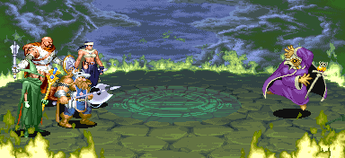
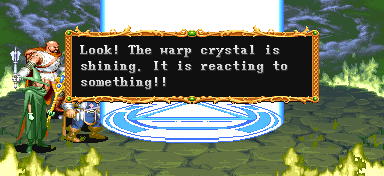

| STAGE 10-5 Arena revisited |
| 재방문한 투기장 |
| (일어판 - 浮遊城-鬪技場III- : 부유성 -투기장2-) |
지난번의 투기장 처럼 보스와 한판 대결을 벌여야 하는 곳이다.
이곳의 보스 다크 워리어 II는 에저호든과 함께 가장 어려운 보스라 할 수 있다.
이곳의 보스 다크 워리어 II는 에저호든과 함께 가장 어려운 보스라 할 수 있다.
|
"너희 꼬맹이들을 다시 보니 반갑군."
(일어판)
"小僧、再び會えて、とってもしいぞ。"
"소승, 다시 만나게 되어 매우 기쁩니다."
"아주 인상깊어, 4천왕 중 둘이나 무찌르다니 말이야."
(일어판)
"四天王2人を倒すなんて、活躍ではないか。"
"사천왕 2인을 물리치다니, 대단한 활약이지 않습니까."
"헌데 이제는 좀 쉬는게 좋겠어......아주 영원히 말이다!!"
(일어판)
"だが、そろそろ?息をな。"
"하지만, 슬슬 좀 쉬어둬야."
이후 다크 워리어 2가 등장하며 싸움이 시작된다.
간단한 공략 - 자세한 공략은 보스 공략을 보도록 한다. ▶ 보스 공략 보기
에저호든과는 또 다른, 최강급의 보스다.
전기대신 불을 쓴다는게 1과 다를 뿐 패턴은 거의 똑같은데 속도가 세배정도는 더 빨라진다는게 정말 문제다. 어지간한 순발력이 아니면 따라가기도 힘들다. 거기다가 가드는 여전히 거의 완벽하게 하고 속도가 빨라졌을 때는 뒤에서 공격해도 가드하는 경우가 많다.
그래서 그냥 공격하는건 왠만큼 실력이 없으면 자살 행위다.
망치 - LB오일 순으로 준비해 두고 싸움이 시작되면 재빠르게 접근해서 망치를 던진다. 중간에 콤보를 한두번 넣어주는 것도 좋다. 그 후에 재빨리 LB오일로 바꿔서 던진다.
그런데 다크 워리어의 HP가 어느정도 줄어들면 무조건 일어나게 되니 5~7개 정도 던지고 다크 워리어가 일어났다가 다시 쓰러지면 나머지를 던지도록 한다.
매직 유저는 망치대신 은단검을 이용한다. 그것으로 끝나지 않는다면 스켈레톤을 거쳐서 라이트닝 볼트 반지를 맞춰주면 어렵지 않게 마무리 할 수 있다.
만약 실수한다면 고생 좀 할 것이다.
에저호든과는 또 다른, 최강급의 보스다.
전기대신 불을 쓴다는게 1과 다를 뿐 패턴은 거의 똑같은데 속도가 세배정도는 더 빨라진다는게 정말 문제다. 어지간한 순발력이 아니면 따라가기도 힘들다. 거기다가 가드는 여전히 거의 완벽하게 하고 속도가 빨라졌을 때는 뒤에서 공격해도 가드하는 경우가 많다.
그래서 그냥 공격하는건 왠만큼 실력이 없으면 자살 행위다.
망치 - LB오일 순으로 준비해 두고 싸움이 시작되면 재빠르게 접근해서 망치를 던진다. 중간에 콤보를 한두번 넣어주는 것도 좋다. 그 후에 재빨리 LB오일로 바꿔서 던진다.
그런데 다크 워리어의 HP가 어느정도 줄어들면 무조건 일어나게 되니 5~7개 정도 던지고 다크 워리어가 일어났다가 다시 쓰러지면 나머지를 던지도록 한다.
매직 유저는 망치대신 은단검을 이용한다. 그것으로 끝나지 않는다면 스켈레톤을 거쳐서 라이트닝 볼트 반지를 맞춰주면 어렵지 않게 마무리 할 수 있다.
만약 실수한다면 고생 좀 할 것이다.
▶ 클리어 후 레벨이 올라가는 클래스 : 클레릭, 시프

무척 놀라는 새머리 괴물
"뭣이!! 다크 워리어는 4천왕 중 최강이라 불렸는데."
(일어판)
"あわわわわっ!!!! 四天王最强といわれたダ―クウォ―リアが...。"
"으와아아아앗!! 사천왕최강이라는 다크 워리어가......"

"봐! 워프 크리스탈이 빛나고 있어. 뭔가에 반응한다!!"
(일어판)
"えっ、ワ―プクリタルが光り輝いてる。何かに反?している!!"
"앗, 워프 크리스탈이 빛나고 있어. 무언가에 반응하고 있는 것 같아!!"
그리고 빛기둥을 따라 어디론가 이동한다.
알아도 그만 몰라도 그만
- 내용 보기 -
다크 워리어 II를 물리치고 나면 지정된 자리로 강제로 이동된다.
이 자리와 멀리 있으면 그만큼 걸어가는 시간이 있으니
시간이 급하다면 미리 최대한 자리를 가깝게 잡는게 좋다.
상점 |
Copyright ⓒ 2007-2008 Crassus & Legon. All rights reserved.